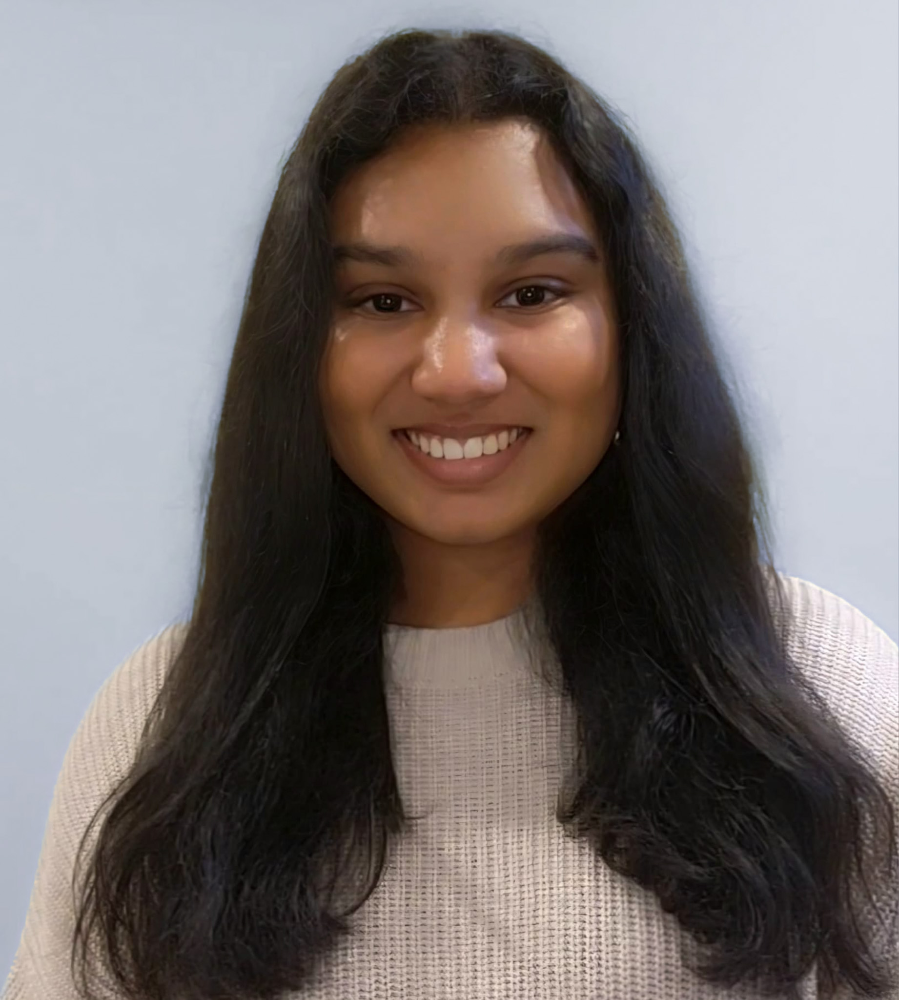

About Me
Welcome to my Website! My name is Shefali, and I am a third-year Behavioral Neuroscience and Data Science major at Northeastern University. I am currently on the pre-med track, and hope to work in the fields of neurology, psychiatry, pediatrics, or family medicine. This website will outline my experiences and interests related to healthcare and healthcare-related research and volunteering, as well as my other interests.
Aside from research, my interests include staying active by going to the gym, which helps me unwind and maintain a balanced lifestyle. I also have a deep love for painting, using it as a creative outlet to explore different styles and techniques.
Spending time with my dog is one of my favorite ways to relax, whether it’s going on long walks or just enjoying quiet moments together. Additionally, I love baking, always looking for new recipes to try—especially when it comes to perfecting desserts to share with family and friends.
I also have a passion for learning new skills, whether it’s embroidery, playing guitar, or picking up a new craft. I love the challenge of trying something unfamiliar and the sense of accomplishment that comes with improving over time.
These hobbies allow me to express creativity, stay active, and find joy outside of my professional and academic interests.
